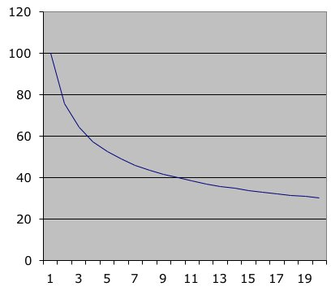

(material from:
Designing the User Interface bySchneiderman, SIGGRAPH 96
course notes #12 - Graphic Design for Usable GUIs)
So far we have talked a lot about fairly conceptual things, now we're going to talk some about putting some rough numbers to those concepts ...
the Model Human Processor
approximation that allows us to make some predictions
Model Human Processor- p26 of The Psychology of Human-Computer Interaction
chunks
BCSBMICRA
CBSIBMRCA
or
4865267437
Here is what the results look like from my last two cs 422 classes
Comparing the
last two classes:
e.g. some thoughts on reading:
- typically we read 250
words per minute
- familiar words
recognized by shape
O lny srmat
poelpe can raed tihs.
I cdnuolt blveiee taht I cluod aulaclty uesdnatnrd waht I was
rdanieg. The phaonmneal pweor of the hmuan mnid, aoccdrnig to a
rscheearch at Cmabrigde Uinervtisy, it deosn't mttaer in waht
oredr the ltteers in a wrod are, t he olny iprmoatnt tihng is taht
the frist and lsat ltteer be in the rgh it pclae. The rset can be
a taotl mses and you can sitll raed it wouthit a porbelm. Tihs is
bcuseae the huamn mnid deos not raed ervey lteter by istlef, but
the wrod as a wlohe. Amzanig huh? yaeh and I awlyas tghuhot
slpeling was ipmorantt! if you can raed tihs psas it on !!"
-
9-12 font size equally legible given proportional spacing between
lines
- some rules of thumb
for line length are 10-12 words per line or 40 chars per line
- positive contrast
(light on dark) are preferred and show better performance
- lower case words are
read faster than words in upper case
- individual letters
and nonsense words UA1416 are read faster in upper case
- when we read we focus
on one word along with 4 chars to left and 15 chars to right
(barbara flagg)
You have several
general choices of font styles to use
Here is a nice
infographic on type - http://zubeta.com/beta/a-guide-to-typography-infographic/
Fitt's Law - Paul Fitts - 1954
time
Tpos to move the hand to a target of size S which lies distance D
away is
Tpos = IM
log2 (D/S + 0.5) where IM = 100 [70-120]
msec/bit
Faster to hit a bigger target. Faster to hit a
closer target.
Different IM constants for
different devices (finger, mouse, joystick, trackball)
Predicts human speed in rapid aimed
movement in one dimension
Others including MacKenzie and Buxton have made modifications to
create 2D
and 3D versions where it is the smaller dimension of
the target area that is critical
Tpos = IM
log2 (D/min(S1,S2) + 0.5) where IM = 100
[70-120]msec/bit
A very detailed discussion can be found here: http://www.yorku.ca/mack/phd.html
and wikipedia: http://en.wikipedia.org/wiki/Fitts's_law
So why should we care about this?
A
Web-based Fitts Test
http://www.tele-actor.net/fitts/index.html
MSDN article on Fitts and Web Design
http://msdn2.microsoft.com/en-us/library/ms993291.aspx
Power Law of Practice
time
Tn to perform a task on the nth trial follows a power
law
Tn = T1n-a
where a = 0.4 [0.2 - 0.6]
note this is just skilled behaviour using perceptual
and motor skills, not knowledge acquisition.
you will get better as you continue to perform as task, but the amount of improvement keeps decreasing ... though fatigue will also be a factor.

Vertical axis is time (seconds), Horizontal axis is trial number
Keystroke Level Model - Card, Moran, Newell - 1983
only gives predictions for execution time, not acquisition time (planning)
K
- Keystroking - striking keys
(pressing
a shift or a control counts as a K as well)
best
typist 0.08 sec (135 wpm)
good
typist 0.12 sec (90 wpm)
poor
typist 0.28 sec (40 wpm)
non-typist
1.20 sec
B - Pressing a mouse
button
down
or up 0.10 sec
click
0.20
sec
P - Moving the mouse at
a target
fitts
law 0.1 log2(D/S + 0.5)
average (mouse) 1.10 sec
H - Homing - switching
hand between mouse and keyboard 0.40 sec
M - Mentally preparing
for a physical action 1.35 sec
R - System response
Ms are hard to place - there are a set of heuristics (p 267 Card book)
Say
we are using a word processor and see an incorrect character on
the screen. We use the mouse to position the insertion bar,
delete the incorrect character, add the new character and then
return to where we were in the document:
| 1 | move hand to mouse | H[mouse] |
| 2 | position mouse after bad character | PB[left] |
| 3 | return to keyboard | H[keyboard] |
| 4 | delete character | MK[delete] |
| 5 | type correction | K[char] |
| 6 | reposition insertion point | H[mouse]MPB[left] |
or we could
compare an editing task in emacs and vi and Xemacs
replace a 5 letter word with another 5 letter
word where the replacement takes
place one line below the previous modification
How useful
are all these numbers really ???
Should we still
be talking about the command line for 'normal' users? The answer
might very well be yes:
http://www.humanized.com/
and Ubuntu is
now adding a head-up display with similar features
http://www.zdnet.com/blog/open-source/beyond-the-desktop-ubuntu-linuxs-new-head-up-display/10204?tag=siu-container;photo-frame
Evolution of the word processor as the technology improves
All of the previously mentioned concepts end up being dealt with in terms of windows, icons, dialogue boxes, menus as a desktop application programmer
the middle of the course will deal with principles for designing these in more detail. Here are some general rules which should help with the projects before we revisit these again in detail
windows
give the user the ability to see multiple pieces of information at the same time
icons
so an overall procedure is
as an example
try this:
sketch some icons for the following
text editing tool
zoom in / zoom out tool
music player
undo tool
now imagine you
have only a 32 x 32 or 128 x 128 grid to display that icon
menus are lists
of verbs, nouns, adjectives and adverbs
menus
so an overall procedure is
dialogue boxes are 2D layouts of verbs, nouns, adjectives
and adverbs
dialogue boxes
so as another exercise, create a 'print document' dialogue box with the following:
When asking the user to enter data, try to help by making the
expected format obvious in the form
Of course this is tricky because all of these things are culturally dependent
Many tools exist for building interfaces and they change fairly regularly